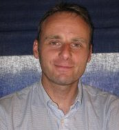

|
Eric GUEGAN 33 rue du Faubourg de Rochebelle 30100 Alès Téléphone : 06 95 38 48 20 |
 |
| 2015 à ce jour | Concepteur de sites internet : Webmaster Web2Créa : W2crea.fr |
| 1999 à 2015 | Administrateur Systèmes Société INGENOVA /VOKTO SA (Société de Conseil et d'Ingénierie) |
| 2003 à février 2015 | Administrateur Systèmes et Réseaux Senior chargé de différents comptes en infogérance : Conception de nouvelles architectures clients-serveurs, maintenances des systèmes et réseaux, conseil et audit (ABN-AMRO, Public-Senat, 30 Millions d ‘amis, Wam, Paf Production, O.R.T.F., Stratx, C.I.L, Pias, Demain TV). |
| Sept 2003 à Oct 2003 | Chef de projet sur la réalisation d’un inventaire de 6000 biens pour le compte de la Société TOTAL. Encadrement des techniciens. Conception d’une base de données et de divers programmes. |
| 2002 / Sept 2003 | En régie chez RTL2/FUN Administrateur Systèmes Avancé et Responsable technique : Chargé de l’uniformisation des outils et logiciels du parc RTL2/FUN sur le modèle du Pôle Radio RTL. Encadrement de l’effectif du service. Administration du domaine (Serveur Novell & Linux). Chargé de la veille technologique du Pôle Radio et des sauvegardes (ArcServ). Assistance aux utilisateurs. |
| 2001 / 2002 | En régie chez IP-France (régie publicitaire du groupe RTL) Responsable technique : Réorganisation totale de la cellule support. Chargé de la migration du parc vers Windows XP. Encadrement de l’effectif du service. Administration des comptes (serveur NT4). Administration d’un serveur Linux (Samba & Apache). |
| 2000 / 2001 | En régie chez RTL Administrateur Systèmes. En charge des sauvegardes (BackupExec). Conception et réalisation d’un logiciel de gestion de la hotline pour le Pôle Radio (RTL - RTL2/FUN – IP-France) En régie chez IP-France Technicien - Assistance utilisateurs (1er et second Niveau) sur un parc de 300 postes clients. Test de nouveaux logiciels. Conception d’un intranet et mise en place de bases de données. |
| 1999 / 2000 | Technicien - Assistance Utilisateurs (1 er Niveau) – Société M2S. Assistance utilisateurs et encadrement d’équipes - En régie pour des grands comptes : ASTRA- ZENECA, CARREFOUR, CEGETEL, FACOM, GAN, GROUPAMA, L’OREAL. |
Anglais: Lu, écrit, parlé
Escalade et raids en haute montagne
Photographie